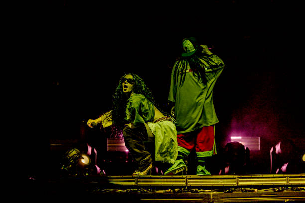

ÁLBUNS & EPs

HIT ME HARD AND SOFT
Álbum
"Hit Me Hard and Soft" é o terceiro álbum de estúdio de Billie Eilish, lançado em 17 de maio de 2024. O trabalho se destaca pela coesão entre as faixas, que se conectam de forma fluida, criando uma experiência sonora contínua. O álbum explora contrastes entre sons suaves e momentos mais intensos, com arranjos que mesclam elementos eletrônicos e orgânicos. A produção refinada, assinada por Finneas, reforça a evolução artística de Billie, resultando em um projeto que equilibra vulnerabilidade e força, consolidando seu espaço na música contemporânea.

HAPPIER THAN EVER
Álbum
"Happier Than Ever" é o segundo álbum de estúdio de Billie Eilish, lançado em 30 de julho de 2021. O álbum apresenta uma evolução significativa em seu estilo, com uma sonoridade mais madura e introspectiva. As faixas transitaram entre o pop experimental, rock, jazz e bossa nova, com letras que exploram temas como autossuficiência, relacionamentos e crescimento pessoal. Produzido por Billie Eilish e seu irmão Finneas, o álbum recebeu elogios pela sua produção impecável e pela forma honesta com que a artista expressa suas emoções, consolidando sua posição como uma das artistas mais inovadoras de sua geração."
WHEN WE ALL FALL ASLEEP, WHERE DO WE GO?
Álbum
"When We All Fall Asleep, Where Do We Go?" é o álbum de estreia de Billie Eilish, lançado em 2019. Com uma abordagem única de pop alternativo, o disco mistura elementos de eletrônica, trap e indie, criando um som inovador e sombrio. As faixas exploram temas de ansiedade, autoimagem e os desafios de crescer sob os holofotes, tudo isso envolto em uma produção minimalista e experimental. O álbum foi aclamado por sua originalidade, pela forma como Billie Eilish e seu irmão Finneas quebraram barreiras na música pop, tornando-se um marco na carreira da artista.
DON'T SMILE AT ME
EP
"Don’t Smile at Me" é o EP de estreia de Billie Eilish, lançado em 2017. Com uma sonoridade que mistura elementos de pop, R&B e eletrônico, o trabalho conquistou rapidamente uma base de fãs fiel. O EP explora temas como relações complicadas, incertezas e questões emocionais, com letras introspectivas e um estilo vocal único. A produção, minimalista e envolvente, ajudou a definir a identidade sonora da artista, marcando o início de sua jornada como uma das vozes mais inovadoras da música contemporânea
SINGLES

EVERYTHING I WANTED
"Everything I Wanted" é um single lançado por Billie Eilish em novembro de 2019. A faixa é uma reflexão íntima sobre as pressões da fama e sua relação com a saúde mental. Inspirada por um sonho em que enfrentava sua própria morte, a musica revela sentimentos de vulnerabilidade e solidão, contrastados com o apoio incondicional de seu irmão e produtor, Finneas.
WHAT WAS I MADE FOR?
"What Was I Made For?" é uma canção lançada em julho de 2023, como parte da trilha sonora do filme Barbie. A música se destaca pelo tom delicado e melancólico, explorando temas de identidade e propósito. Com uma interpretação vocal suave e uma produção minimalista assinada por Finneas, a faixa reflete sobre momentos de vulnerabilidade e a busca por sentido em meio às pressões externas.

TV
"TV" é uma música de Billie Eilish lançada em 2022, que reflete sobre a desconexão e a busca por sentido em um mundo saturado de informações. A canção combina uma produção suave com letras que expressam a frustração de se perder em distrações como a televisão e as redes sociais, enquanto tenta lidar com questões emocionais profundas. Billie transmite uma sensação de vulnerabilidade e solidão, deixando claro o desejo de se encontrar em meio ao caos e à superficialidade das mensagens externas.
SIX FEET UNDER
"Six Feet Under" é um single de Billie Eilish lançado em 2016, conhecido pela sua abordagem minimalista e atmosférica. A música explora a fragilidade emocional em um relacionamento, abordando sentimentos de estagnação e perda. A produção sutil transmite uma sensação de introspecção, enquanto a letra reflete sobre a dificuldade de seguir em frente em uma situação que já está desgastada.
PARCERIAS MUSICAIS
KHALID
A parceria de Billie Eilish com Khalid resultou na faixa "Lovely", lançada em 2018. A música é uma balada melancólica, com uma produção suave e minimalista, onde as vozes dos dois artistas se complementam perfeitamente. A letra de "Lovely" aborda sentimentos de solidão e a luta interna contra a tristeza, criando uma atmosfera introspectiva. A colaboração foi bem recebida, destacando a habilidade de Billie e Khalid em explorar temas emocionais profundos com uma abordagem sensível e madura. A canção se tornou um sucesso, conquistando a crítica e o público, e figurando em diversas playlists e trilhas sonoras. A química entre os dois artistas ficou evidente, mostrando como suas vozes e estilos únicos se equilibram de maneira impactante.
JUSTIN BIEBER
Billie Eilish e Justin Bieber colaboraram na faixa "Bad Guy (Remix)", lançada em 2019. A parceria trouxe uma nova dimensão ao sucesso global de "Bad Guy", com Justin Bieber acrescentando seu estilo único à música. O remix manteve a essência da versão original, mas a colaboração introduziu elementos mais dinâmicos, incluindo a presença de Bieber nos vocais e uma pegada mais dançante. A parceria foi muito aguardada pelos fãs de ambos os artistas, criando uma fusão interessante entre os estilos de Billie Eilish, com seu pop alternativo e sombrio, e Justin Bieber, com seu pop mais acessível e mainstream. A faixa foi bem recebida, marcando um encontro de duas grandes estrelas da música contemporânea e ampliando ainda mais o alcance de "Bad Guy".
ROSALÍA
A parceria de Billie Eilish com Rosalía resultou na faixa "Lo Vas A Olvidar", lançada em 2020. A música foi feita especialmente para a série Euphoria e mistura os estilos únicos de ambas as artistas. Com um tom melancólico, a faixa combina os vocais suaves e introspectivos de Billie com a energia flamenca e intensa de Rosalía, criando uma atmosfera emocionalmente carregada. A colaboração é marcada pela fusão de culturas musicais distintas, unindo o pop alternativo de Billie com o estilo tradicional espanhol de Rosalía, mas sempre mantendo um tom sombrio e íntimo.
CHARLI XCX
A parceria entre Billie Eilish e Charli XCX cria a faixa "Guess", marcando um momento significativo na carreira de ambas as artistas. Lançada em 2024 como parte da edição deluxe do álbum Brat de Charli, a colaboração une dois estilos únicos dentro do pop alternativo e experimental. A música combina as influências eletrônicas e ousadas de Charli XCX com a intensidade introspectiva de Billie Eilish, resultando em uma faixa energética e inovadora. Ambas as artistas, conhecidas por suas abordagens criativas e fora do convencional, criaram uma obra que reflete suas personalidades artísticas fortes, ganhando destaque na cena musical.
PREMIAÇÕES
| Ano | Prêmio | Categoria | Trabalho | Resultado |
|---|---|---|---|---|
| 2019 | Guinness World Records | Artista feminina mais jovem a alcançar o nº 1 na parada de álbuns do Reino Unido | - | Venceu |
| 2019 | Guinness World Records | Maior número de entradas simultâneas de uma artista feminina no US Hot 100 | - | Venceu |
| 2020 | Grammy Awards | Álbum do Ano | When We All Fall Asleep, Where Do We Go? | Venceu |
| 2020 | Grammy Awards | Gravação do Ano | Bad Guy | Venceu |
| 2020 | Grammy Awards | Canção do Ano | Bad Guy | Venceu |
| 2020 | Grammy Awards | Artista Revelação | - | Venceu |
| 2020 | Grammy Awards | Melhor Álbum Vocal de Pop | When We All Fall Asleep, Where Do We Go? | Venceu |
| 2021 | Grammy Awards | Gravação do Ano | Everything I Wanted | Venceu |
| 2021 | Grammy Awards | Melhor Canção Escrita para Mídia Visual | No Time to Die | Venceu |
| 2022 | Oscar | Melhor Canção Original | No Time to Die | Venceu |
| 2024 | Grammy Awards | Canção do Ano | What Was I Made For? | Venceu |
| 2024 | Grammy Awards | Melhor Canção Composta para Mídia Visual | What Was I Made For? | Venceu |
| 2024 | Oscar | Melhor Canção Original | What Was I Made For? | Venceu |
| 2024 | Apple Music Awards | Artista do Ano | - | Venceu |
| 2024 | Guinness World Records | Pessoa mais jovem a vencer duas vezes o Oscar | - | Venceu |
PERFORMANCES
Coachella 2022
O Coachella 2022 foi surreal. Billie fez um show inesquecível criando uma atmosfera mágica e única.
Grammy Awards 2020
Com uma performance intimista de "When The Party's Over", Billie encantou o público com sua voz e piano, levando a plateia a uma experiência emocional.
Olimpíadas de Paris 2024
Uma performance super emocionante e histórica, que abriu as Olimpíadas de Paris 2024, capturando corações ao redor do mundo.
Academy Awards 2022 – "No Time To Die"
Billie Eilish arrasou no palco cantando "No Time To Die", sendo elogiada pela plateia por sua performance poderosa e cheia de emoção.